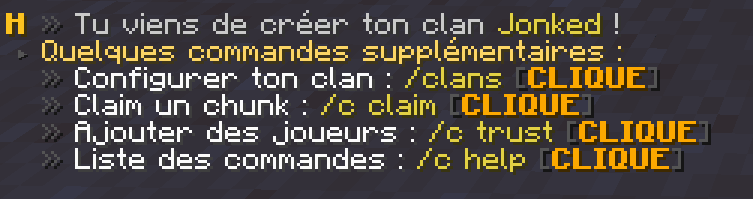

Comment créer un clan ? Tutoriel
Difficulté :
Créer un clan est l'étape initiale de votre aventure sur le serveur. En effet, un clan vous permet de sécuriser vos ressources et vos constructions. Mais vous pouvez faire bien plus ! Créer une ville, y inviter vos amis, les autoriser à réaliser des actions indépendament.
Ce guide aura pour but de vous aiguiller de manière simple afin de comprendre facilement comment fonctionne le système de clans.
Information importante
Le système de clans dans son ensemble est très complexe. C'est pourquoi, ce guide restera basique afin de le présenter de manière claire. Si tu souhaites en apprendre plus, nous te laissons la possibilité de demander aux staffs qui pourront aider davantage sur la gestion plus complexe du système.
Pour commencer, grâce à la commande /clan create <nom du clan>, cela te permettra de créer ton clan. Cette commande va claim le chunk où tu te trouve. C'est-à-dire que personne à part toi ne pourras construire, casser de blocs, ouvrir de coffres, etc.
Attention
Détail important, la commande de création de clan ne peut être exécutée qu'uniquement dans le monde Survie.

Maintenant que ton clan est créé, tu peux "claim", c'est-à-dire revendiquer une zone, délimitée par un chunk (16x16). La quantité de chunk que tu peux claim est limitée par grade. Ainsi, c'est le grade du chef du clan qui détermine le nombre de claims que le clan peut compter (jusqu'à 500 pour le Capitaine).
Un clan te permet de protéger une zone dans laquelle tu souhaites faire ta base, cela évite que quiconque vienne détruire ta maison ou piller tes coffres.
Tu peux également inviter d'autres joueurs dans ton clan pour avoir accès à tes coffres, construire, casser, etc. grâce à la commande /clan invite <pseudo>. Grâce au menu de gestion de ton clan accessible via la commande /clan, tu peux alors gérer les différentes permissions du rôle des membres de ton clan et même des visiteurs.
Conseil
Si tu possèdes une ferme que tu veux rendre publique, tu peux permettre l'accès au rôle de visiteur de tuer les monstres dans ton clan. Grâce à cela, n'importe qui pourra tuer les monstres. Mais attention à bien gérer ces permissions !